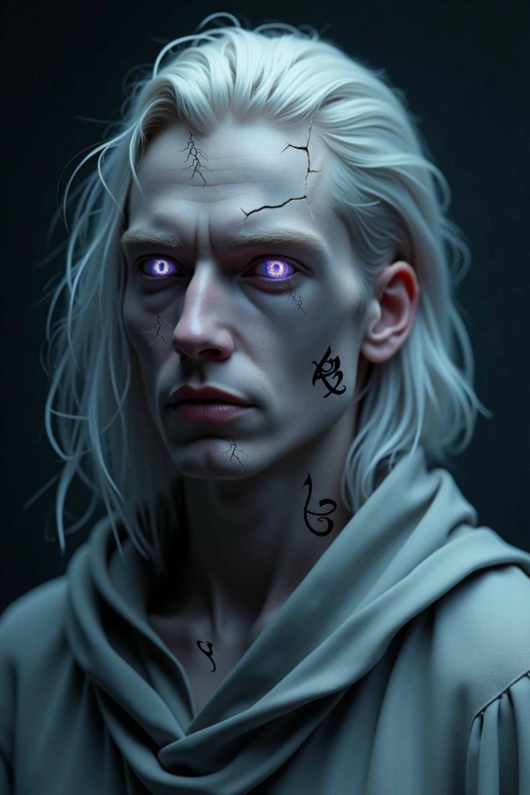

Факты и особенности внешности Астранитов
Общий облик
— Гуманоидные существа с элегантными, почти скульптурными пропорциями.
— Тела выглядят так, будто собраны из мерцающей материи и тени.
Кожа и текстура
Цвет:
- Молодые (0–500 лет): Бледная, почти фарфоровая, с легким холодным оттенком.
- Мастера (500+ лет): Пепельно-серый тон.
- Творцы (1000+ лет): Тёмно-серая, почти металлическая, но сохраняет естественную текстуру.
Текстура:
- Гладкая, как у людей, но при ярком свете слабо отражает свет (словно покрыта тончайшей кристаллической пылью).
- У старейшин (500+ лет) кожа покрыта трещинами, сквозь которые просвечивает Субстрат (как лава в разломах).
Узоры:
- Проявляются при использовании сил.
- Выглядят как светящиеся геометрические фигуры (треугольники, спирали, руны), проступающие под кожей.
Глаза
Символ:
- В центре зрачка плавает рунический знак (у каждого уникальный).
- Новички: Простые символы (линии, точки).
- Творцы: Сложные многослойные узоры (напоминают магические печати).
Свечение:
- В покое: Тусклое, как светлячок.
- В бою: Ослепительное, оставляет шлейфы при движении.
Цвет радужки:
- Обычно холодных оттенков (серебристый, голубой, сизый).
- У Творцов может становиться белым или золотистым.
Волосы
Структура:
- Обычные волосы, но с вкраплениями микроскопических кристаллов Субстрата.
- У Мастеров и Творцов могут слабо светиться (например, в бою или при сильных эмоциях).
Цвет:
- Тёмные (угольно-чёрные, тёмно-синие) или серебристые.
- У Творцов возможны мерцающие пряди (как звёздная пыль).
Физиология
Рост:
- Молодые: 1.8–2.4 м.
- Творцы: До 3 м (из-за накопления Субстрата).
Телосложение:
- Эктоморфное (стройные, с длинными конечностями), но могут развивать мышцы при необходимости.
Детали:
- Беззвучное движение: не шевелят воздух, даже бегая.
- Голос: Глубокий, с лёгким эхом (как будто говорит не только горло, но и само пространство вокруг).
- Запах: Отсутствует или очень слабый металлический оттенок.
Пример визуализации
Типичный астранит-Мастер:
- Высокий (2.3 м), стройный, с пепельно-серой кожей.
- Глаза ледяно-голубые, зрачки светятся слабым серебром, внутри виден рунический круг.
- Волосы тёмные, но при движении искрятся, как покрытые инеем.
- При использовании силы под кожей проявляются светящиеся спиральные узоры.


Другие уникальные особенности
— Кровь: Серебристо-чёрная, содержит нанокристаллы Субстрата.
— Слёзы: Застывают в виде кристаллов, временно усиливающих телекинез.
— Отсутствие старения: Тело не деградирует со временем, но может кристаллизоваться.
Астраниты выглядят почти как люди, но их детали (глаза, узоры, мерцание) сразу выдают их природу. Чем
старше астранит, тем больше он отдаляется от человеческого облика, становясь живым воплощением Субстрата.